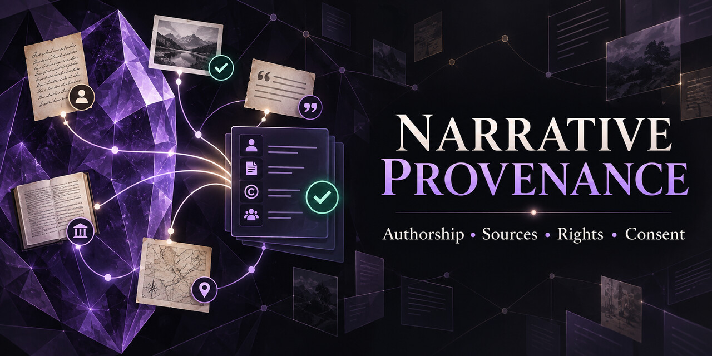

Status
Verified, interpretation, fictional, mixed, or unreviewed.
Obsidian community plugin · v0.1.1
Record what a note is, where it came from, who created it, and what rights or permissions apply—in readable properties that remain inside your vault.
Submitted for Obsidian review

Why it exists
Narrative Provenance gives writers, researchers, archivists, journalists, and collaborative worldbuilders a consistent way to distinguish verified information from interpretation and fiction—while keeping authorship, copyright, consent, and affiliation separate.
Readable by people and tools
The guided editor writes ordinary YAML frontmatter, so provenance stays portable even without the plugin.
Verified, interpretation, fictional, mixed, or unreviewed.
The people or organizations responsible for the work.
The date associated with the record or source.
Links or references that support the record.
Original, licensed, public domain, permission status, or fair-use claim.
Tracked separately from ownership and licensing.
Independent, official, or unclear—without implying endorsement.
Privacy first
Important boundary
The plugin records a user’s assessment. It does not authenticate sources, secure permission, determine copyright ownership, or provide legal advice. Users remain responsible for review and publication decisions.
Open source · MIT licensed
Try the current release in a separate test vault, report focused issues, and help make provenance easier to preserve.